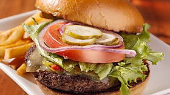

BURGERS



CLASSIC BURGER
....................................................................
$19.99
"A hamburger, or simply burger, is a sandwich consisting of fillings—usually a patty of ground meat, typically beef—placed inside a sliced bun or bread roll. Hamburgers are often served with cheese, lettuce, tomato, onion, pickles, bacon, or chilis; condiments such as ketchup, mustard, mayonnaise, relish, or a "special sauce", often a variation of Thousand Island dressing; and are frequently placed on sesame seed buns. A hamburger patty topped with cheese is called a cheeseburger"
CHEESE BURGER
........................................................................
$7.99
"A hamburger, or simply burger, is a sandwich consisting of fillings—usually a patty of ground meat, typically beef—placed inside a sliced bun or bread roll. Hamburgers are often served with cheese, lettuce, tomato, onion, pickles, bacon, or chilis; condiments such as ketchup, mustard, mayonnaise, relish, or a "special sauce", often a variation of Thousand Island dressing; and are frequently placed on sesame seed buns. A hamburger patty topped with cheese is called a cheeseburger"
ONION BURGER
..............................................................................
$8.99
"A hamburger, or simply burger, is a sandwich consisting of fillings—usually a patty of ground meat, typically beef—placed inside a sliced bun or bread roll. Hamburgers are often served with cheese, lettuce, tomato, onion, pickles, bacon, or chilis; condiments such as ketchup, mustard, mayonnaise, relish, or a "special sauce", often a variation of Thousand Island dressing; and are frequently placed on sesame seed buns. A hamburger patty topped with cheese is called a cheeseburger"
CHICKEN BURGER
.................................................................
$18.99
"A hamburger, or simply burger, is a sandwich consisting of fillings—usually a patty of ground meat, typically beef—placed inside a sliced bun or bread roll. Hamburgers are often served with cheese, lettuce, tomato, onion, pickles, bacon, or chilis; condiments such as ketchup, mustard, mayonnaise, relish, or a "special sauce", often a variation of Thousand Island dressing; and are frequently placed on sesame seed buns. A hamburger patty topped with cheese is called a cheeseburger"